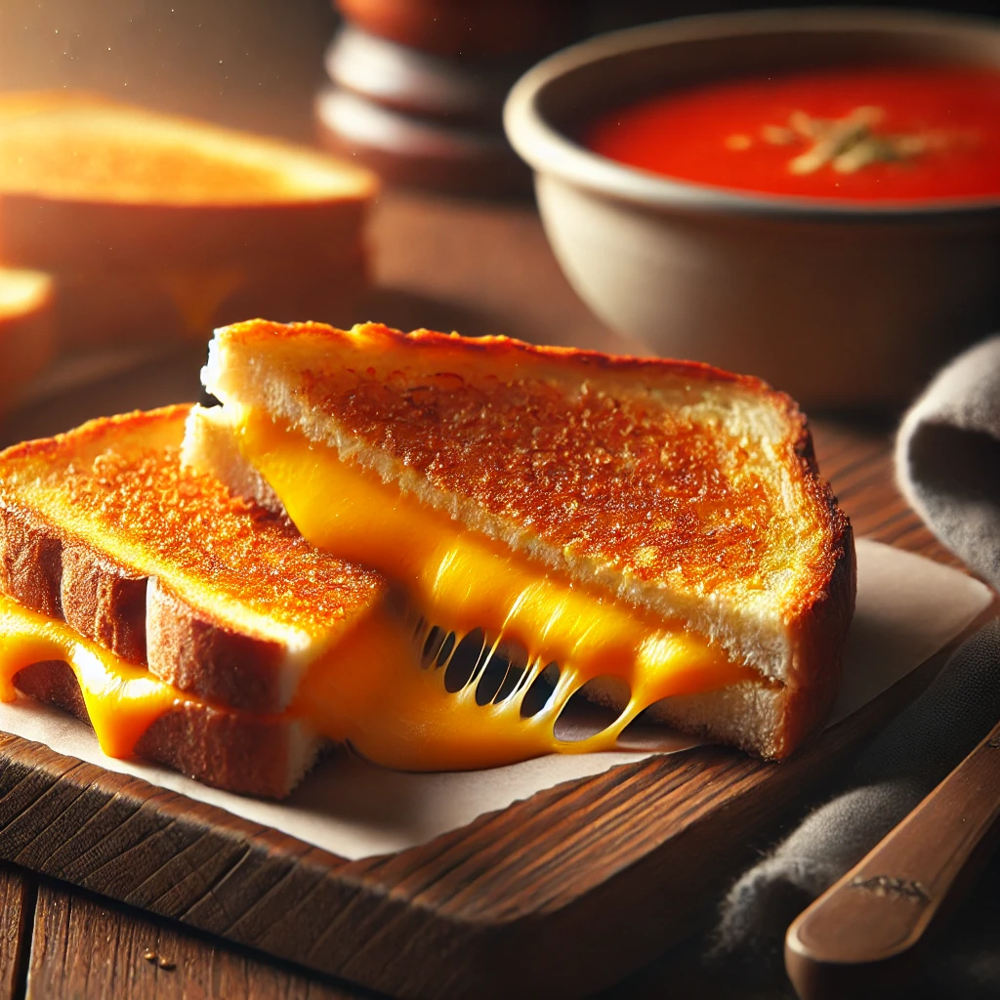

Classic Grilled Cheese Sandwich
Home

Description
A grilled cheese sandwich is a simple yet satisfying comfort food. With crispy golden bread and gooey melted cheese inside, it’s the perfect quick meal for any time of the day. Pair it with tomato soup for a classic combo!
Ingredients
- 2 slices of bread
- 2 slices of cheddar cheese
- 3 tablespoons olive oil
Steps
- Butter one side of each bread slice.
- Place cheese between the unbuttered sides of the bread.
- Heat a pan over medium-low heat.
- Cook the sandwich for 2-3 minutes per side until golden brown and crispy.
- Serve hot and enjoy!